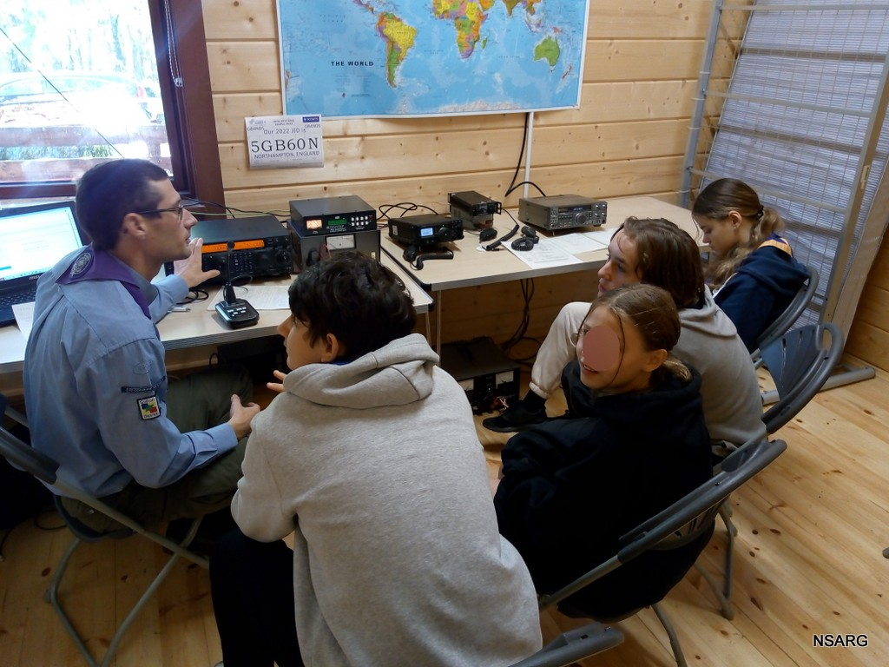
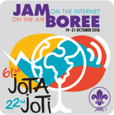
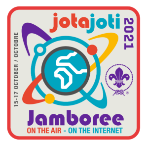
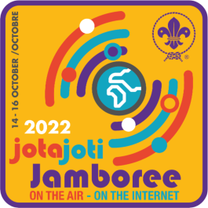

<!DOCTYPE html>
<html lang="en">
<head>
  <meta charset="utf-8">
  <meta name="viewport" content="width=device-width, initial-scale=1.0">
  <meta name="keywords" content="Radio Scouting NSARG JOTA JOTI GB4NDS G6NDS Amateur radio Northampton scout Amateur  daily NOAA images">
  <meta name="author" content="Karrl Richardson G7AAY">
  <title>NSARG</title>
  <!--<script src="https://code.jquery.com/jquery-3.6.0.min.js"></script>-->
  <script src="HTTPS://code.jquery.com/jquery-1.9.1.min.js"></script>
  <script src="js/smoothscroll.js"></script>
  <link href="css/bootstrap.css" rel="stylesheet">
  <link rel="stylesheet" type="text/css" href="css/style.css">
  <link rel="stylesheet" href="css/elusive-webfont.css">
  <link href="css/animate.css" rel="stylesheet">
  <link rel="stylesheet" href="https://cdnjs.cloudflare.com/ajax/libs/font-awesome/5.15.3/css/all.min.css">
  <link rel="preconnect" href="https://fonts.gstatic.com" crossorigin>
  <link href="https://fonts.googleapis.com/css2?family=Nunito+Sans&display=swap" rel="stylesheet">  
  

 
</head>
<body>
  <!-- Your content goes here -->
</body>
</html>

  <body>
    <div class="navbar navbar-btn">
      <a href="#home">
      </a>
      <a href="/noaa/" class="smoothScroll">NOAA Weather Images

      </a>
      <div class="dropdown">
        <button class="dropbtn">Resources 
          <i class="fa fa-caret-down">
          </i>
        </button> 
        <div class="dropdown-content">
          <!-- Beavers -->
          <div class="row">
            <h3>Beavers</h3>
            <a href="#">Communicator
             </a>
            <a href="#">Experimenters
             </a>
          </div>
          
          <!-- Cubs -->
          <div class="row">
            <h3>Cubs
            </h3>
            <a href="#">Communicator
            </a>
          </div>
          
          <!-- Scouts -->
          <div class="row">
            <h3>Scouts
            </h3>
            <a href="#">Communicator
            </a>
            <a href="#">Electronics
             </a>
          </div>
          
          <!-- Explorers -->
          <div class="row">
            <h3>Explorers
            </h3>
            <a href="#">Science and technology
            </a>
          </div>
          
          <!-- Badge Requirements -->
          <div class="header">
            <h2>Badge Requirements
            </h2>
          </div>
        </div>
      </div>
    </div>
<!-- ==== SITE TITLE ==== -->
<div id="headerwrap">
  <header class="clearfix">
    <h1 class="animated bounceIn with-shadow">Northampton Scout Amateur Radio Group
    </h1>
    <h4>This site is still under development. It is a learn as you go project,<br> 
      As any project, it is taking a lot longer than expected. The last updated date is displayed in the footer of the page.
    </h4>
  </header>
  <h2>
   
        <div class="box">
        </div>    
          <h2>
            <a href="https://outlook.live.com/owa/calendar/63bf5110-e673-4e55-bf2d-12997e678fcb/79e03142-f0e3-4d75-8734-9961ba12c9b3/cid-B6C8E57F0967A84D/index.html" 
            class="btn homebtn smoothScroll">
            View Calendar,
            <i class="el-icon-calendar homeicon"></I>
          </a>
             <div class="gap blog-bg h4">
              <h3 class="alert-success">Click the View Calendar to see Meeting dates and other group activities
              </h3>
              <h2 class="alert-danger">There is NO meeting in September 2023
              </h2>
            </div>
<!--  Three Columns -->
<div class="greywrap rw">
<div class="container" id="about">
  <div class="row">
    <div class="col-md-4 col-sm-4 col-xs-6">
      <div class="callout">
        <div class="col-md-9 fade-up service-info">
          <!-- Content for the first column -->
          <h2 class="purple text-center">66th Jamboree on the Air -
            66 years connecting Scouts!
           </h2>
          <h4 class="text-center green">20th - 22nd
            October 2023 
          </h4>
          <h4 class="purple">
            - The station this year will be located in
            Knight's Lodge at Overstoine Scout Activity Centre. We have an
            exciting programme of Radio Scouting activities at Jamboree On
            The Air and Jamboree on the Internet this year. This includes a
            live video feed with other Scouts around the world, receiving images
            from weather satellites and contacting other Jamboree stations
            using HF voice communications.
            Many other aspects of the amazing world of radio communications can
            be experienced. If you or your group would like to take part
            please contact us by clicking the button below.
          </h4>
            <a class="btn btn-success" href="mailto:nsarg81@outlook.com">JOTA Bookings
            </a>
        </div>
      </div>
    </div>
    <!-- End of column 1 -->
    <!-- Column 2 -->
    <div class="col-md-4 col-sm-4 col-xs-6">
      <div class="callout">
        <div class="col-md-9 fade-up service-info">
          <!-- Content for the second column -->
          <h2 class="green text-center">JOTA and Radio Scouting
          </h2>
          <h4 class="green">
            Jamboree on the Air is the highlight of the Radio Scouting calendar, when Scouts have the opportunity to share experiences and exchange ideas 
            with some of the 1.5 million young people taking part. This is truly the biggest Scout Jamboree in the world!
          </h4>
        </div>
      </div>
    </div>
    <!-- End of Column 2 -->
    <!-- Column 3 -->
    <div class="col-md-4 col-sm-4 col-xs-6">
      <div class="callout">
        <div class="col-md-9 fade-up service-info">
          <!-- Content for the third column -->
          <h2 class="purple text-center">Having fun at JOTA 2022
           </h2>
          <h4 class="purple">
            Another great weekend was had at Overstone Scout Ground for the 65th Jamboree on the air. Scouts from across Northamptonshire gathered to camp and undertake a weekend of activities alongside a fully operational Amateur radio Station working on HF (Cobweb, G5RV and Longwire Antenna) VHF / UHF (Co-Linear and Discone) and Satellites (QFH Antenna) as well as Skype allowing contacts around the world and locally. Using SSB, Morse, FT8 and Digital modes.
            A highlight of the weekend was being able to work the GB100BBC special event station to commemorate 100 years of the BBC. Scouts were able to practice their French, German and Spanish as they had their first taste of the hobby.
            We are very grateful to our friends at <a href="https://www.amphenol.com/" class="btn btn-success">amphenol</a> for their continued support and sponsorship with the event.
            
          </h4>
        </div>
      </div>
    </div>
    <!-- End of Column 3 -->
  </div>
</div>
</div>


<!-- ==== WHO we are ==== -->
<div class="container" id="who">
  <div class="row white">
    <h1 class="green text-center">Who we are
    </h1>
      <div class="fade-up col-md-6">
        <h4 class="purple"><br>
   The Northampton Scout Amateur Radio Group had its first meeting in 1981 and spent the first few years visiting local Scout Troops and running Scout Communicator badge courses 
   from a local School where the caretaker was a very active short wave listener.
<br>
<br>During the early years, the group used to travel to the Radio Station at Gilwell Park on Saturdays, helping them to run courses and entertain Scouts and 
visitors from all over the world. When we first started going to Gilwell it was decided to move the radio station from its location on the Branchet Field to a 
new location in the P.B. Neville Scouters' Club at the back of The Lid.  Erecting antennas, carrying out major building work and rewiring taught us a lot.
<br>
These lessons became invaluable a few years later when our dream came true and NSARG had the offer of a building that we could call our shack.
The only trouble was we had to dismantle it, move it from the other side of town and rebuild it at the Overstone Scout Activity Centre.
        </h4>
      </div>
  <!-- col-md-6 -->
      <div class="fade-up col-md-6">
          <p>
            
          </p>
      </div> 
    </div> 
<!--END SECTION BADGE REQUIREMENTS-->
<!-- ==== SECTION DIVIDER2   See NSW-27 class=textdivider-h1 sets the colour of the text--> 
<section class="section-divider textdivider-h1 divider3">
  <div class="container">
    <h2 class="fade-down">Using a band guide helps new listeners find and understand the various modes of transmission used in amateur Radio
    </h2>
      <p class="fade-up">
      </p>
</section>
<!-- SECTION DIVIDER2 END -->

<!-- container -->
<!-- section -->
<!-- ==== TEAM Leaders ==== -->
<!-- Formats 3 Columns-->
<div class="container section">
  <div class="row white justify-content-center text-center">
    <!--#headerwrap p { CONTROLS the text size and colour-->
    <h2 class="purple fade-down">MEET THE LEADERS
    </h2>
      <hr class="fade-down title-mb divider3"></div>
  </div>
<!-- Each Leader start-->
  <div class="col-md-4 fade-down text-center"> <!-- Added 'text-center' class -->
      <div>
`        <!-- Added 'mx-auto' class -->
      </div>
          <div class="team-info">
            <h4 class="green text-center">Ian G8WPU
            </h4>
<p>
  Ian formed the radio group in 1981.
</p>
          </div>
    </div>  

<!-- ==== Leader  Karrl==== -->
<div class="col-md-4 fade-down text-center"> <!-- Added 'text-center' class -->
  <div>
    
  </div>
    <div class="team-info">
      <h4 class="green text-center">Karrl G7AAY
      </h4>
        <p>
     Joined the radio group as a 12 year Old Scout in 1982 after completing the Scout Communicator Badge Course SComm002.
        </p>
    </div>
  </div>
<!-- End of Karrl-->

<!-- ==== Leader  MIKE==== -->  
<div class="col-md-4 fade-down text-center"> <!-- Added 'text-center' class -->
<div>
  
</div>
<div class="team-info">
  <h4 class="green text-center">Mike G8HLU
  </h4>
  <p>Joined the radio group in
  </p>
</div>
</div>
<!-- End of Mike-->
<!-- End of Row 1 Leaders-->

<!-- row Two of leaders Peter.Pete,Barry-->
      <!-- ==== Leader  Pete==== -->            
<div class="row white justify-content-center text-center">
</div>
      <div class="col-md-4 fade-down text-center"> <!-- Added 'text-center' class -->
      <div>
          
      </div>
        <div class="team-info">
          <h4 class="purple text-center">Pete G4LYC
          </h4>
            <p>Joined the radio group in
            </p>
        </div>
      </div>
<!-- End of Pete-->

<!--Start Peter G6AXH-->
<div class="col-md-4 fade-down text-center"> <!-- Added 'text-center' class -->
  <div>
    
  </div>
      <div class="team-info">
        <h4 class="purple text-center">Peter G6AXH
        </h4>
          <p>Joined the radio group in
          </p>
      </div>
</div>
<!-- End of Leader Peter-->
<!--Start Barry M7BDR-->
<div class="col-md-4 fade-down text-center">
<div>

</div>
<div class="team-info">
<h4 class="purple text-center">Barry M7BDR</h4>
<p>Joined the radio group in</p>
</div>
</div>
<!-- End of Leader Barry-->
<!-- Start of row 3 Allan, James, Rob-->
<div class="row white justify-content-center"></div>

<!--Start Allan M1CDP-->
<div class="col-md-4 fade-down text-center">
<div>

</div>
<div class="team-info">
<h4 class="green text-center">Allan M1CDP</h4>
<p>Joined the radio group in</p>
</div>
</div>
<!-- End of Allan-->
<!--Start James-->
<div class="col-md-4 fade-down text-center">
<div>

</div>
<div class="team-info">
<h4 class="green text-center">James M7HJT</h4>
<p>Joined the radio group in</p>
</div>
</div>
<!-- End of James-->
<!--Start Rob-->
<div class="col-md-4 fade-down text-center">
<div>

</div>
<div class="team-info">
<h4 class="green text-center">Rob M7RNM</h4>
<p>Joined the radio group in</p>
</div>
</div>
<div class="row white justify-content-center text-center"></div>  <!-- Starts a new row and is required before the leader of each row only-->
 <!--Start James-->
<div class="col-md-4 fade-down text-center">
<div>

</div>
<div class="team-info">
<h4 class="purple text-center">Bob M0HAF</h4>
<p>Joined the radio group in</p>
</div>
</div>
</div>
</div>
<!-- container -->

<!-- ==== GREYWRAP ==== -->
<div class="greywrap">
<div class="container">
  <div class="row">
    <div class="col-md-6 centered fade-up">
      
    </div>
    <div class="col-md-6 fade-down">
      <h2>Would you like to be part of this expanding hobby, or find out more?</h2>
      <p>Come along to one of our regular monthly meetings,
        Check out our Facebook group page. 
        Send us an Email
        </p>
      <p>
        <a class="btn btn-success" href="mailto:nsarg81@outlook.com">Email</a>
        <a class="btn btn-success" href="https://www.facebook.com/groups/nsarg">Facebook</a>
     </p>
    </div>
  </div>
  <!-- row -->

<br>
<br>
</div>
</div>
<!-- greywrap -->

<!-- ==== SECTION DIVIDER3 -->
<section class="section-divider textdivider divider3">
<div class="container">
  <h1 class="purple">RADIO SCOUTING WILL HELP YOU GROW</h1>
  <hr>
  <p class="fade-up purple">
    Radio Scouting is a unique combination of amateur radio with the Scouting programme. Scouts study radio communication and electronics among other things and can earn a number of badges like the Communicator Activity Badge.
    <section class="section-divider"></p>
</div>
<!--<title>Jamboree Badges</title>
<div id="carouselExampleInterval" class="carousel slide mx-auto" data-bs-ride="carousel">
  <div class="carousel-inner">
    <div class="carousel-item active" data-bs-interval="1000">
      
    </div>
    <div class="carousel-item" data-bs-interval="1000">
      
    </div>
    <div class="carousel-item" data-bs-interval="2000">
      
    </div>
    <div class="carousel-item">
      
    </div>
  </div>
</div>
-->
  


<!-- ==== BLOG ====-->
<div class="container" id="blog">
  <br>
  <div class="row white">
    <h1 class="fade-down centered">News and Activities</h1>
    <hr class="fade-down title-mb">
  </div>
   <!-- Content for the left column goes here -->
<div class="column">
    <h2 class="slideInLeft green">GB4NDS</h2>
            <blog-lrg h4> During our monthly meetings in 2023 The station will be operating using a Special Event callsign GB4NDS.</blog-bg>
            
          </div>
          <!-- Content for the Right column goes here -->
          <div class="column">
          <h2 class="slideInLeft green">Congratulations</h2>
            <blog-bg h4> During Covid members of the group completed the Essex Ham Online Foundation Course and passed.<br>
              Rob M7RNM<br>
              James M7HJT<br>
              Jacob M7***<br>
              Alex   M7***
            </blog-bg h4>
              
          </div>          
           <!-- Content for the left column goes here -->
          <div class="column">
           <h2 class="slideInLeft purple">DMR Talkgroup</h2>
              <blog-bg h4> If you have access to DMR TGIF Network.
                Please feel free to join us on 36222
              </blog-bg h4>
              
          </div>  
          <div class="column">
            <h2 class="slideInLeft purple">JOTA 2022 Introduction</h2>
              <blog-bg h4> All Scouts that visited were given a brief introduction, before splitting into small groups. In the smaller groups, they 
                visited each of the different activities. 40/80 Meters station. 10, 15 and 20 Meter SSB and FT8 finally our two-meter station where they could pass greetings messages
                <br>
                </blog-bg h4>
            </div>         
           <!-- Left Colum-->
           <div class="column">
            <h2 class="slideInLeft green">JOTA 2023</h2>
              <h4 class=""> 
                The station this year will be located in Knight's Lodge at Overstone Scout Activity Centre. We have an exciting programme of Radio Scouting activities at Jamboree On The Air and Jamboree on the Internet this year. This includes a live video feed with other Scouts around the world, receiving images from weather satellites and contacting other Jamboree stations using HF voice communications. Many other aspects of the amazing world of radio communications can be experienced. </h4>
                
                </h4>
            </div>    </div>      </div>   
<div class="column">
   <!-- Content for the right column goes here -->
  

<!--End of BLOGG-->
     <!-- Donations section -->
   <div class="container">
    <div class="row">
        <div class="col-md-12">
            <h1 class="centered">Donations</h1>
            <h4 blog-bg>
                Many thanks to Ron Pass.
                Ron has recently donated a TS130 HF Transceiver, an ATU and PowerSupply.
            </h4>
            <h4>
                Two Laptops, both of which have been setup for Logging, Data modes using SDR receivers.
                The NOAA weather images On this site were received using one of the laptops.
            </h4>
        </div>
    </div>
</div> 
<!-- ==== SECTION Station Location ==== -->
<section class="section-divider6 textdivider6 text-center">
<div class="container" id="location">
  <div class="row white">
    <h1 class="fade-down center-block">NSARG - Station location.</h1>
    <hr>

    <!--<div class="fade-up col-md-6 text-center">-->
       <hr>
      <div class="fade-up">
        <h2 class="green text-center">Northampton, England. 60 miles North of London</h2>
        <p><strong>Location:</strong> IO92NG, WAB Square SP76</p>
    </div>
  </div>
</div>
</section>

<!-- END SECTION Station Location -->

<div class="container" id="visitor">
<div class="row row white">
  <br>
  <h1 class="fade-down green text-center">THANKS FOR VISITING US</h1>
</div>
  <div class="row justify-content-center text-center"> <!-- Center the flag counter horizontally -->
    <a href="https://info.flagcounter.com/Gkvo">
      
    </a>
  
  <hr class="fade-down title-mb">
  <div class="col-md-4 fade-up">
    <!-- col -->
  </div>
</div>    
 <div id="footerwrap">
<div class="container">
  <i>
    <h2 class="btn btn-success" href="https://www.facebook.com/groups/nsarg"> Consider Joining our Facebook page</h2>
    <footer>
      <h2>Site Last Updated: <span id="lastUpdatedDate"></span></h2>
      <p>Version: <span id="versionNumber">1.0</span></p>
      
      
    </footer>
  <i></i>
  <script>
    document.addEventListener("DOMContentLoaded", function() {
        // Get the elements where you want to display the last updated date and version number
        const lastUpdatedElement = document.getElementById("lastUpdatedDate");
        const versionNumberElement = document.getElementById("versionNumber");

        // Define the current date
        const currentDate = new Date();

        // Format the date as dd/mm/yyyy
        const formattedDate = `${currentDate.getDate().toString().padStart(2, "0")}/${(currentDate.getMonth() + 1).toString().padStart(2, "0")}/${currentDate.getFullYear()}`;

        // Update the content of the elements with the formatted date and version number
        lastUpdatedElement.textContent = formattedDate;
        versionNumberElement.textContent = "1.0.04"; // Change this to your desired version number
    });
</script>

  
<!-- Bootstrap core JavaScript
================================================== -->
<!-- Placed at the end of the document so the pages load faster -->
<script src="js/bootstrap.js"></script>
<script src="js/plugins.js"></script>
<script src="js/init.js"></script>
</footer>
</html>


</body>
</html>
